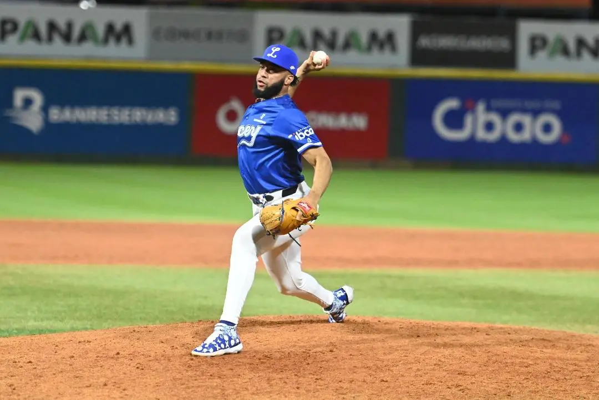

Licey anuncia rotación para próximos tres partidos

Manuel Acevedo
"Adonis Medina será uno de los lanzadores abridores del Licey."
Los Tigres del Licey anunciaron su rotación abridora para los próximos tres partidos del campeonato otoño-invernal 2025-26. Adonis Medina (1-1, 2.08) será el abridor frente a las Águilas Cibaeñas en el desafío de este viernes en casa (7:30 p.m., estadio Quisqueya Juan Marichal). Estará en su primera apertura de la temporada. En ocho partidos acumula 13 entradas, ha cedido tres vueltas merecidas con cuatro boletos y 11 ponchados. La oposición le batea para .227.
El sábado está pautado para hacer su apertura el zurdo importado Nico Tellache (1-2) cuando el Licey devuelva la visita a las Águilas en el estadio Cibao a partir de las seis de la tarde. Será su sexta presentación de la estación, la quinta como iniciador. Los bateadores contrarios le conectan para porcentaje de .211, ha ponchado a 10 con seis bases por bolas en 16 episodios, la tercera cifra más alta del club.
Leer la noticia completa en CDN